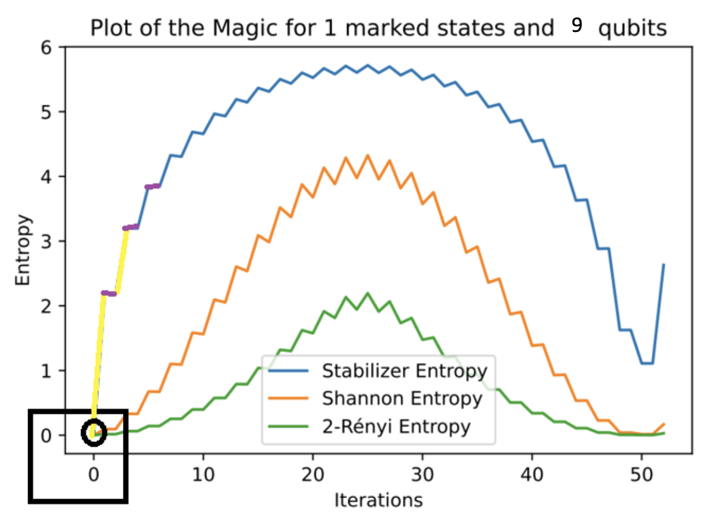
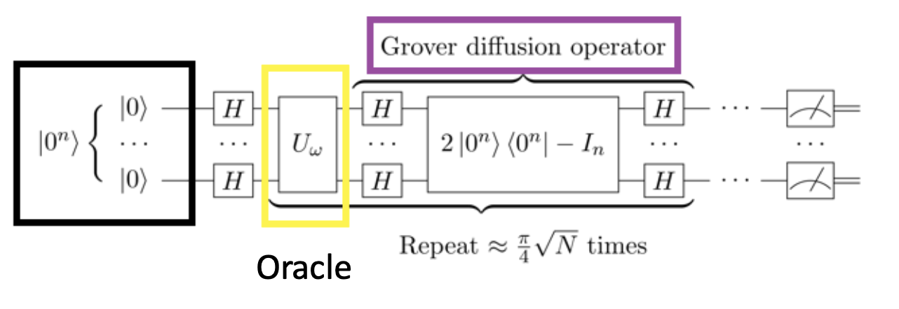

Resource theory · magic · stabilizer entropy
Resource Theory and Stabilizer Entropies
This project explored how to quantify non-stabilizerness, or “magic,” as a resource for quantum computation. It grew out of a broader question in quantum information science: if not every quantum system gives an advantage, how do we identify and measure the resources that make some quantum systems powerful?
I worked on this project during my undergraduate research at Imperial College London with Soovin Lee in Professor Myungshik Kim’s group. The project focused on stabilizer Rényi entropy as a measure of magic, and on efficient algorithms for estimating this quantity without explicitly summing over exponentially many Pauli operators.
Motivation: what is quantum advantage?
A quantum computer is not powerful simply because it is quantum. The Gottesman–Knill theorem shows that circuits made only of stabilizer states, Clifford operations, and Pauli measurements can be simulated efficiently on a classical computer. This gives a clear example of the boundary between quantum behavior and useful quantum advantage.
To go beyond this classically tractable regime, quantum computation needs non-stabilizer resources. These resources are often called magic. Stabilizer entropy gives a way to quantify how much a state departs from stabilizer structure.
Grover’s algorithm as a case study
I used Grover’s algorithm as a case study because it has a clear structure: an oracle marks the target state, and a diffusion operator amplifies the marked state. This makes it a useful setting for asking how magic is generated, transformed, and reshaped during a computation.


Technical idea
Stabilizer Rényi entropy is built from the expectation values of Pauli operators. A stabilizer-like state has a concentrated distribution over Pauli operators, while a non-stabilizer state has a more spread-out distribution. Entropy provides a way to quantify that spread.
Mα(ψ) = 1 / (1 − α) log[ 1 / 2n Σσ∈Pn |⟨ψ|σ|ψ⟩|2α ]
The challenge is that the number of Pauli strings grows as 4n. Direct computation is therefore exponentially expensive. The efficient estimation approach rewrites the quantity as an expectation value over multiple copies of the state, allowing it to be estimated through Bell measurements and classical post-processing.
Takeaway
This project shaped how I think about quantum advantage. Rather than treating advantage as a yes-or-no property, resource theory lets us ask what resource is present, how much of it exists, how it evolves during a computation, and whether it can be accessed experimentally.
It also connects to a broader research direction I want to pursue: comparing quantum systems with classical analogues to understand what makes a system genuinely quantum, and where classical simulation stops being efficient.
References and links
- Leone, Oliviero, and Hamma, “Stabilizer Rényi Entropy,” Physical Review Letters, 2022.
- Haug, Lee, and Kim, “Efficient Quantum Algorithms for Stabilizer Entropies,” Physical Review Letters, 2024.
- Haug and Kim, “Scalable Measures of Magic Resource for Quantum Computers,” PRX Quantum, 2023.
- Oliviero, Leone, Hamma, and Lloyd, “Measuring Magic on a Quantum Processor,” npj Quantum Information, 2022.
- Professor Myungshik Kim, Imperial College London.